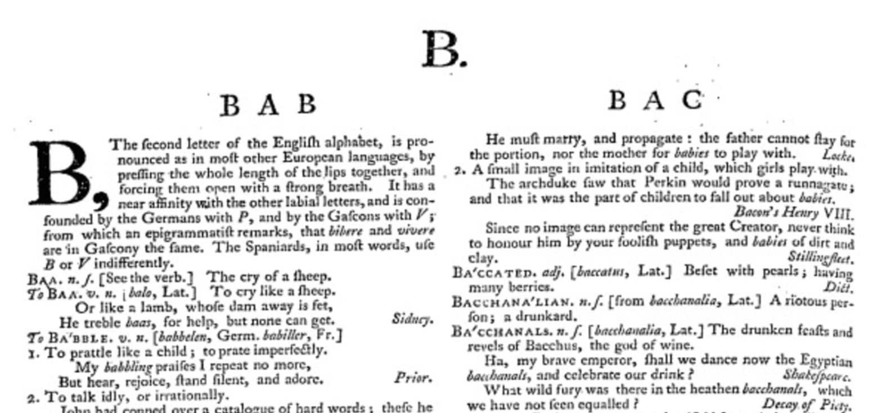
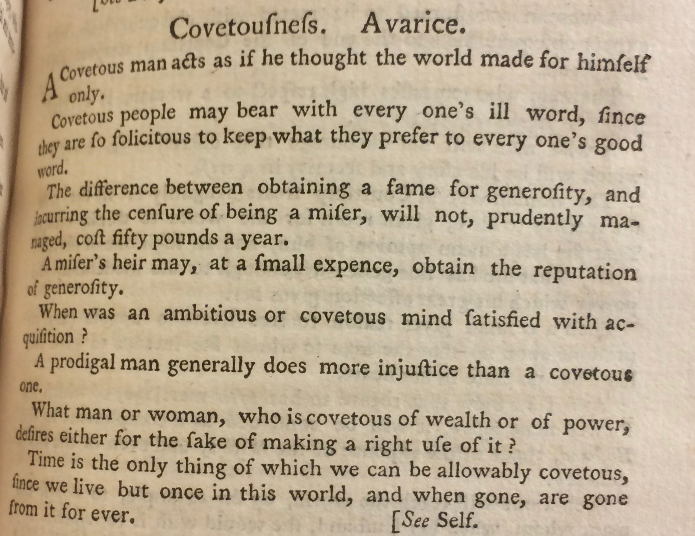

The taxonomical nature of the work aligns the Collection with not only Locke's commonplace method but also with reference books: texts, such as encyclopedias and dictionaries, which store and manage information. As Ann M. Blair outlines in Too Much to Know: Managing Scholarly Information before the Modern Age (2010), reference books are characterized by "large-scale compilation, finding devices, and layouts to facilitate consultation reading" (9).
As a printer himself, it is likely that Richardson was active in deciding the Collection's graphic design. One way in which we can study these graphic design choices is by comparing Moral Sentiments with Richardson's earlier efforts at commonplacing, a collection of sentiments appended to a 1751 edition of Clarissa entitled Letters and passages restored from the original manuscripts of the History of Clarissa (learn more abou this collection here). If we compare this 1751 commonplacing of Clarissa with the Clarissa section in Richardson's 1755 Moral Sentiments, it becomes clear that Richardson was using the graphical elements in Moral Sentiments to emphasize the book as a reference work. While Richardson, for the most part, keeps the same quotations, order of quotations, and heading names from the original 1751 Collection of Clarissa sentiments, he reworks the overall organization and design elements, changing the reader's perception of the work itself.
First, as we can see with the “L.” on this page, Richardson adds alphabetical headings to the 1755 Collection: marking the beginning of the sections under “A”, “B”, “code”, and so on. Given that these alphabetical headings wouldn't necessarilly increase the ease at which a reader could navigate the book (given that they could simply look to the headings to understand the alphabetical schema), I suggest that the headings were added to align the book with dictionaries and encyclopedias, both newer and increasingly-popular genres. As evident from the image below, Samuel Johnson's Dictionary - published in the same year - used similar capital letters to orient its reader.
Dictionary." style="width:100%;height:auto;">In addition, Richardson reformats the 1755 Moral Sentiments to break up the blocks of text within each section. In his 1751 appendix collection, Richarson uses drop caps for the first sentiment (so that the first letter of the first sentiment is significantly larger), thus visually signifying that each section can, and perhaps should, be read as a continuous block of prose.
In this 1755 collection, Richardson downplays the beginning of these sections, changing the large dropcap to a a smaller capitalized first word. Richardson also inserts page numbers at the end of each sentiment, which constantly draws the reader outside of the book, rather than to the next sentiment. By visually segmenting each sentiment, Richardson discourages a continuous, linear reading of the text while aligning it, graphically, with other reference works.
{Return to Tour Table of Contents}